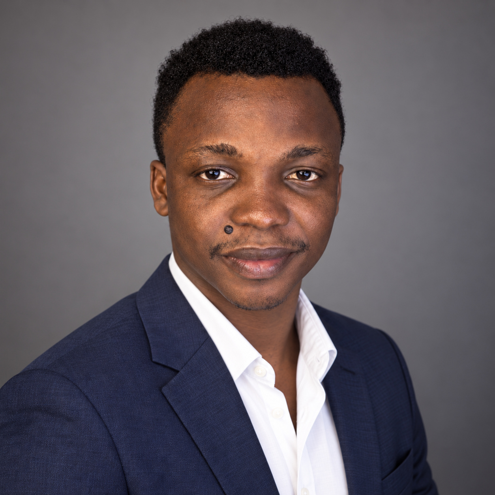

01
Clarity first
Hierarchy, message and audience come before visual noise. The work should make communication easier, not merely prettier.
I help ambitious businesses turn ideas into distinctive identity systems, packaging, campaigns and digital experiences built to communicate clearly and compete confidently.

A focused selection of identity, packaging and campaign work. Each project is presented as a connected design system rather than a collection of isolated graphics.
A strong visual identity should help a business become easier to recognise, trust and remember.
Hierarchy, message and audience come before visual noise. The work should make communication easier, not merely prettier.
A logo is only the beginning. I think in repeatable visual systems that can move across packaging, campaigns, print and digital touchpoints.
Production constraints, materials, dimensions, budgets and handoff matter. Good design still has to work when it leaves the screen.
I'm Odusina Isaac, a Brand Identity and Visual Designer focused on helping organisations communicate with more clarity, consistency and confidence.
My work spans brand identity, packaging, campaign design, production artwork and digital experiences. That range gives me a practical understanding of how a brand has to behave across both screens and physical applications.
I care about the thinking beneath the visual: the audience, hierarchy, production reality and business goal that make design useful as well as memorable.
Visual identity systems, logo direction, typography, colour, brand assets and practical guidelines built for consistency.
Packaging, labels, sacks, print applications and production-ready artwork shaped around real materials and constraints.
Campaign concepts, social content systems, promotional design and visual toolkits that keep communication coherent.
Responsive portfolio, corporate and landing-page experiences connecting visual identity with usable digital design.
Clarify the audience, context, objectives, competitive environment and practical constraints around the brief.
Explore and refine a direction into a coherent language with enough structure to remain recognisable across touchpoints.
Translate the system into the deliverables, formats and production conditions where the brand will actually live.
Available for selected brand identity, packaging, campaign and digital projects, creative collaborations and professional opportunities.